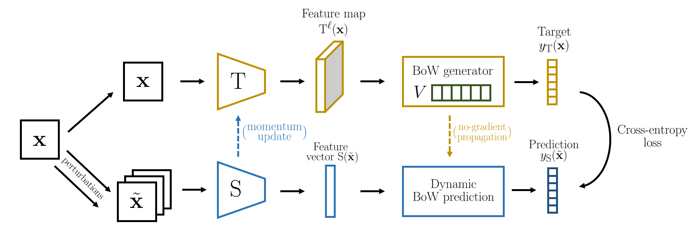

Online Bag-of-Visual-Words Generation for Unsupervised Representation Learning
Spyros Gidaris Andrei Bursuc Gilles Puy Nikos Komodakis
Patrick Pérez Matthieu Cord
CVPR 2021

Abstract
Learning image representations without human supervision is an important and active research field. Several recent approaches have successfully leveraged the idea of making such a representation invariant under different types of perturbations, especially via contrastive-based instance discrimination training. Although effective visual representations should indeed exhibit such invariances, there are other important characteristics, such as encoding contextual reasoning skills, for which alternative reconstruction-based approaches might be better suited.
With this in mind, we propose a teacher-student scheme to learn representations by training a convnet to reconstruct a bag-of-visual-words (BoW) representation of an image, given as input a perturbed version of that same image. Our strategy performs an online training of both the teacher network (whose role is to generate the BoW targets) and the student network (whose role is to learn representations), along with an online update of the visual-words vocabulary (used for the BoW targets). This idea effectively enables fully online BoW-guided unsupervised learning. Extensive experiments demonstrate the interest of our BoW-based strategy which surpasses previous state-of-the-art methods (including contrastive-based ones) in several applications. For instance, in downstream tasks such Pascal object detection, Pascal classification and Places205 classification, our method improves over all prior unsupervised approaches, thus establishing new state-of-the-art results that are also significantly better even than those of supervised pre-training.
Results

BibTeX
@inproceedings{gidaris2021obow,
title={Learning Representations by Predicting Bags of Visual Words},
author={Gidaris, Spyros and Bursuc, Andrei and Puy, Gilles and Komodakis, Nikos and Cord, Matthieu and P{\'e}rez, Patrick},
booktitle={Proceedings of the IEEE/CVF Conference on Computer Vision and Pattern Recognition},
year={2021}
}